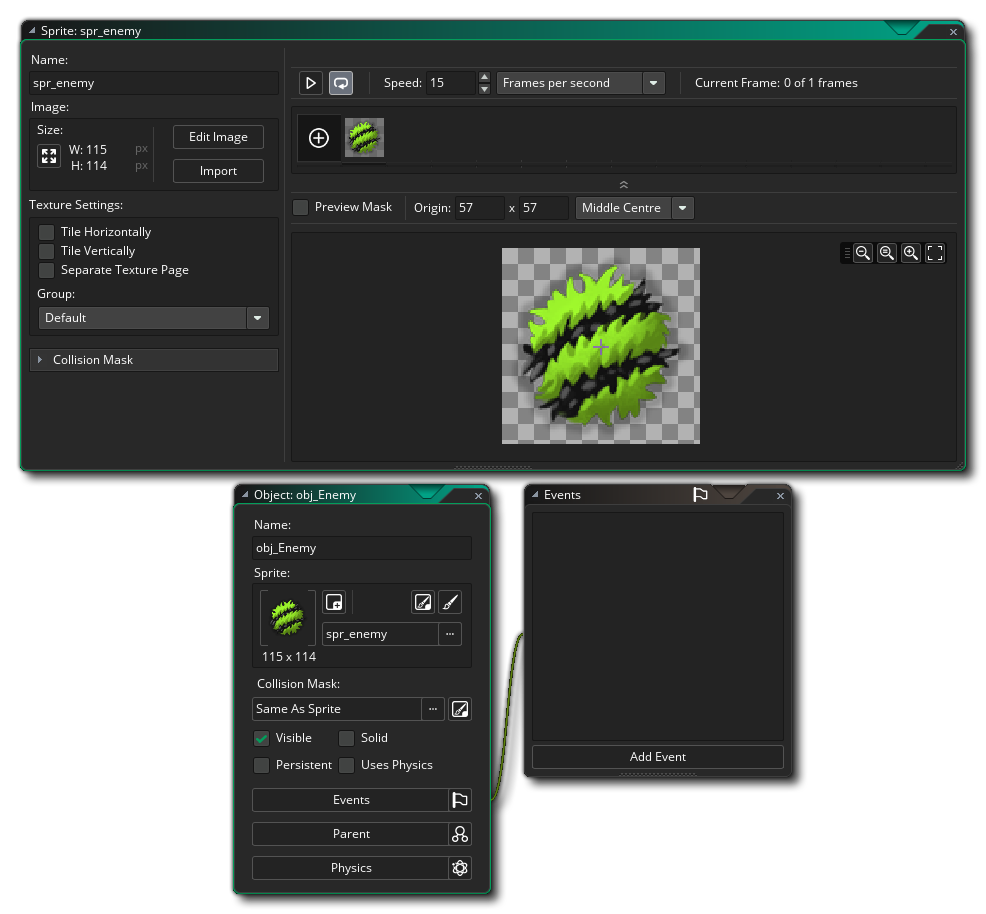

The workflow for creating the enemy object is the exact same as that which we used for the player and bullet objects, so we'll simply list the steps here, as you should be familiar with how it goes:
- Create a new sprite resource
- Call it "spr_enemy"
- Import an image (remember, while following this tutorial the file explorer should take you to the TutorialResources folder automatically where you can find the sprites used in the "Images" sub-folder). If you have any issues, you can also find the images here.
- Set the origin of the sprite to the middle (use the drop down menu)
- Create a new object resource
- Call it "obj_enemy"
- Assign the enemy sprite we just added to the new object
If all has gone correctly, your workspace should look like this: 
We now add a Create Event for our enemy object. In this event, we will add the following Assign Variable action :

"hp" is an instance variable that we want all instances of this object to have, and it will store the "health points" for the enemy object. Every time we shoot the enemy, we will deduct 1 from this value until it reaches 0 and it is removed from the game. Keep in mind that instance variables need to be initialised before use, and so that is why we have them in the Create Event, as that event is run for every instance the moment it is created in a room and the event only runs once so the variable is only set once at the start.
Next we need another variable for the speed we want the enemy to move at:
This variable will be used to define the movement speed of the instance. Note that we are not setting the "speed" value directly, but instead will be using this custom variable to set the speed. Why? Well, we could just use the value 1.5 in all future actions when we deal with the instance speed, but if we want to change that value, it would mean searching through all the actions and manually fixing it. This can be very time consuming and error prone, so we use the instance variable instead to store the value. This means that should we want to change it, we only need to change it in this one event, and all the rest of the actions will "just work".
We now need to add a Step Event to the enemy object. This event runs every game frame and in it we are going to check for a player instance in the room, and if one is found we'll move towards it. The actions will be like this:
Let's just go through the actions here one at a time so you can see what is happening:
| With this action, we check to see if there is an instance of the player object in the game room because later we want to access certain variables from that instance. This is a bit of forward thinking on our part, as we will eventually have the player "die" in our game, removing its instance from the room, and if we try to access the variables of an instance that doesn't exist, then the game will error and crash. |
|
| We know that an instance of the player object exists, thanks to the above check, so that means we can access its variables. The method shown here is the "point" method for accessing variables in another instance. Simply provide <object_index>.<variable> or <instance_id>.<variable> and you can get or set values from another instance, as long as it exists in the room (see the comments above checking if an instance exists above). |
|
| We have set the direction so now we use this action to set the speed to the variable we defined in the create event. |
|
So, if there is an instance of the player, we then tell the enemy to move at the speed of the "spd" variable towards it. Finally we want to add this, outside of the "if":
You've seen this action before in the other objects, so you should know what we're doing here... The full action list now looks like this:
You should open the Room Editor now on our game room and add a few instances of this enemy object into it (click  and drag from the resource tree into the room area), and then test the game:
and drag from the resource tree into the room area), and then test the game: